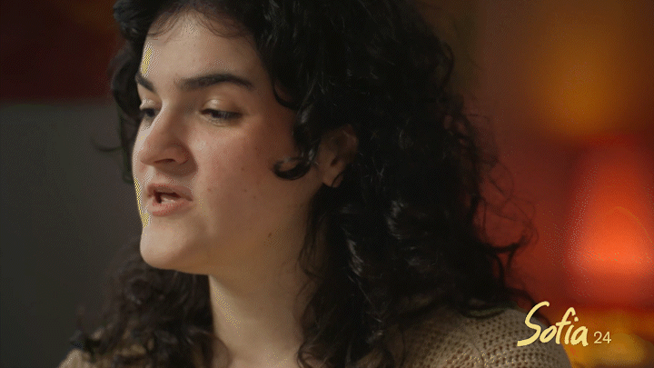
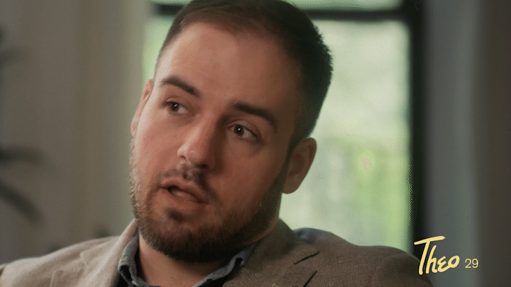
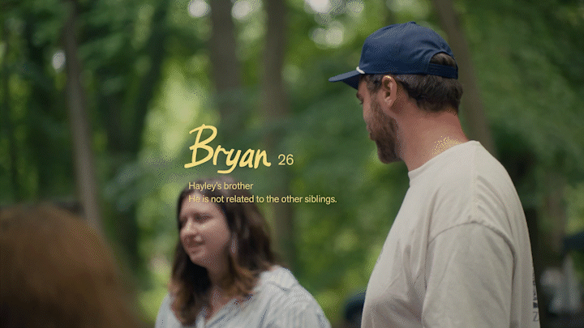

Top
*
-
Bloodfriends
Client [Title Design, Lower Thirds]Bloodfriends is a documentary about an unlikely group of people brought together through the shared discovery that they were fathered by the same man through sperm donation. The documentary explores themes of kinship and closeness in completely uncharted societal territories and delivers a touching but unresolved message of connection.
I designed the title sequence and lower thirds for this film and incorporated rough, hand-lettered typography paired with a nostalgic grotesk sans to invoke a sense of familiarity and sensitivity. This system serves as the backdrop to a summer camp-like setting that is journalistic but not kitchy, earnest but not over-exagerated.
Bloodfriends was screened at docNYC 2025. -

- 
- 
- 
-